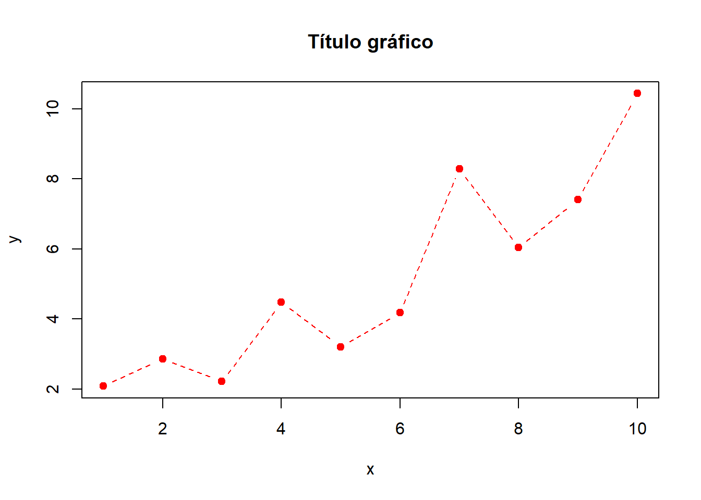
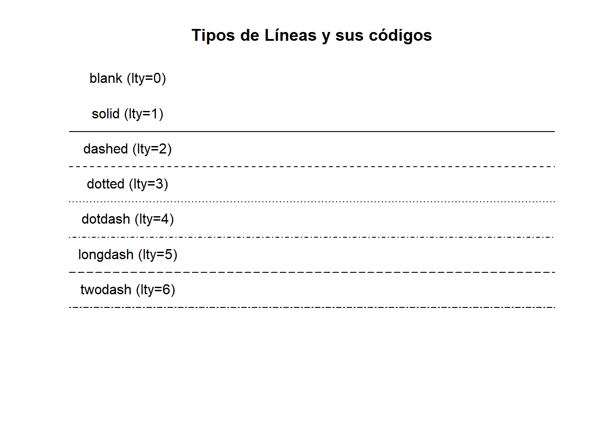
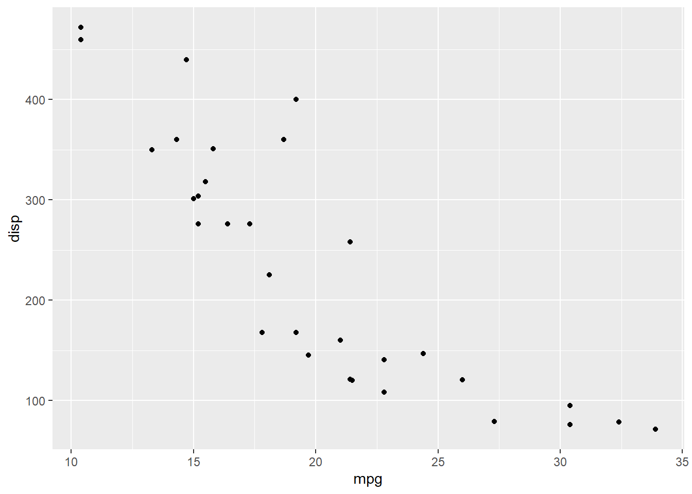
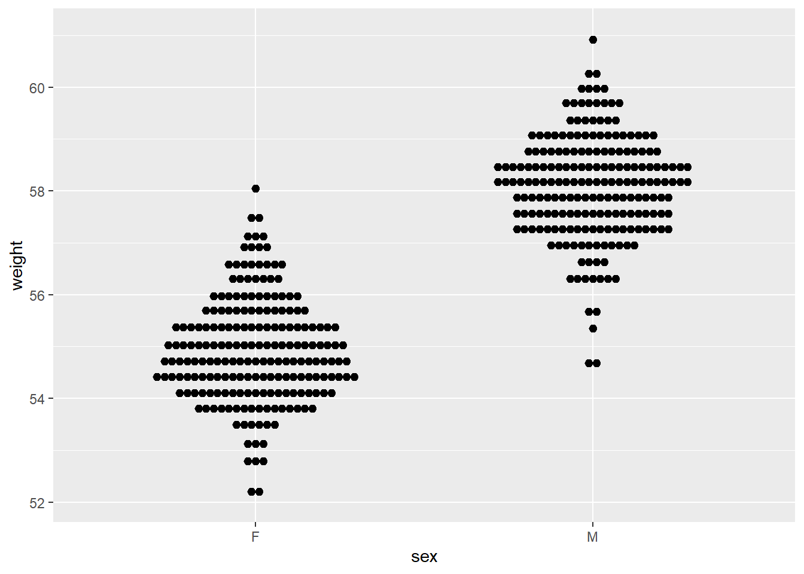

Gráficos en R
Cristian Santa
Introducción
El software R contiene una batería de gráficos en su paquete base, con el cual es posible realizar la mayoría de gráficos estadísticos conocidos. Existen muchos paquetes adicionales que contienen gráficos más complejos para soluciones específicas, sin embargo, con las funciones del base es posible realizar muchas personalizaciones.
La función plot es la que se usa para graficar objetos de R, como el software es orientado a objetos (OOP), entonces los gráficos interpretan las clases a las que pertenecen los objetos creados en R.
## [1] plot.acf* plot.data.frame* plot.decomposed.ts*
## [4] plot.default plot.dendrogram* plot.density*
## [7] plot.ecdf plot.factor* plot.formula*
## [10] plot.function plot.hclust* plot.histogram*
## [13] plot.HoltWinters* plot.isoreg* plot.lm*
## [16] plot.medpolish* plot.mlm* plot.ppr*
## [19] plot.prcomp* plot.princomp* plot.profile.nls*
## [22] plot.raster* plot.spec* plot.stepfun
## [25] plot.stl* plot.table* plot.ts
## [28] plot.tskernel* plot.TukeyHSD*
## see '?methods' for accessing help and source codeTodos los gráficos están compuestos de las siguientes partes:
Gráficos con base
## function (x, y = NULL, type = "p", xlim = NULL, ylim = NULL,
## log = "", main = NULL, sub = NULL, xlab = NULL, ylab = NULL,
## ann = par("ann"), axes = TRUE, frame.plot = axes, panel.first = NULL,
## panel.last = NULL, asp = NA, xgap.axis = NA, ygap.axis = NA,
## ...)
## NULLLa función plot() recibe dos vectores x e y (también puede ser matrix, table o data.frame) que deben tener el mismo tamaño y por defecto grafica su representación por puntos.



Después de llamar un plot puedes incluir elementos adicionales al gráfico, como líneas (lines, abline), puntos (points) o texto (text). Cada instrucción ingresa una capa adicional al gráfico en el orden de entrada.
plot(y~x,pch=19,main="Ejemplo Rectas")
lines(x,y,lwd=2,lty=2)
points(x,y+2,pch=19,col=2)
lines(x,y+2,lwd=2,lty=2,col=2)
abline(lm(y~x))
abline(lm(I(y+2)~x),col=2)
text(2,8,labels = "Recta 1")
text(2,9,labels = "Recta 2",col=2)El comando legend permite agregar leyendas a los gráficos, para instruir su lectura.
plot(mpg~disp,col=factor(gear),data=mtcars,pch=19,
main="Desplazamiento vs Consumo Gasolina")
legend("topright",pch=19,col=1:3,legend = levels(factor(mtcars$gear)),
title = "Número de Cambios")plot(mpg~disp,data=mtcars,type="n",
main="Desplazamiento vs Consumo Gasolina")
text(mpg~disp,data=mtcars,labels=rownames(mtcars),cex=0.6,
col=gear-2,adj=c(0,0.5))
legend("topright",fill=1:3,legend = levels(factor(mtcars$gear)),
title = "Número de Cambios",horiz = T)Gráficos Estadísticos
R es un software de estadística, como tal su entorno está desarrollado para realizar análisis estadísticos y esto no es ajeno a los gráficos.
Barras barplot
El gráfico de barras sirve para evidenciar las frecuencias absolutas, o relativas de una variable categórica.
set.seed(2019)
ciudades <- sample(5,300,replace = T,
prob = c(0.1,0.4,0.2,0.3,0.1))
ciudades <- factor(ciudades,
labels = c("Cali","Medellín","Bogotá",
"Barranquilla","Cartagena"))
plot(ciudades,main="Distribución de las Ciudades")
En el gráfico anterior plot reconoce que ciudades es un factory realiza el grafico de barras.
## ciudades
## Cali Medellín Bogotá Barranquilla Cartagena
## 26 113 49 90 22Gráfico Tortas o secciones pie
El gráfico de secciones permite evidenciar proporcionalmente cómo se distribuyen proporcionalmente las frecuencias de una variable categórica en un círculo.
Gráfico de mosaico mosaicplot
El gráfico de mosaico sirve para comparar dos variables categóricas.
## impacto
## ciudades Bajo Mediano Alto
## Cali 12 6 8
## Medellín 41 34 38
## Bogotá 17 14 18
## Barranquilla 26 37 27
## Cartagena 4 9 9Gráfico cajas y bigotes boxplot
Los gráficos de cajas y bigotes permiten analizar el comportamiento de una variable cuantitativa, se compone de una caja que continene el 50% de la información la cual está dividida en dos por la mediana y se extiende de cada extremo de la caja unos bigotes que muestra la longitud de la distribución. Es una buena forma de evdenciar datos extremos o atípicos, ya que, muestra los puntos que potencialmente no pertenecen a la distribución de la variable por fuera de los bigotes.
set.seed(4321)
ingresos <- ceiling(rlnorm(300,5,0.5))
colores <- colors()[sample(675,5)]
boxplot(ingresos~ciudades,pch=20,col=colores,
main="Distribución de los ingresos por ciudad",
ylab="Miles de millones ($)",las=1)boxplot(ingresos~ciudades,pch=20,col=colores,horizontal=T,
main="Distribución de los ingresos por ciudad",
xlab="Miles de millones ($)",las=1,cex.axis=0.7,lty=1)boxplot(ingresos~ciudades,pch=20,col=colores,
main="Distribución de los ingresos por ciudad",
ylab="Miles de millones ($)",las=1,notch=T)Histogramas
hist(ingresos, main="Distribución de los ingresos",las=1,
col="lightblue")
hist(ingresos, main="Distribución de los ingresos",las=1,
col="lightblue")
rug(ingresos,col=2)Densidades
##
## Call:
## density.default(x = ingresos)
##
## Data: ingresos (300 obs.); Bandwidth 'bw' = 22.59
##
## x y
## Min. :-23.77 Min. :6.960e-07
## 1st Qu.:131.36 1st Qu.:1.256e-04
## Median :286.50 Median :6.503e-04
## Mean :286.50 Mean :1.610e-03
## 3rd Qu.:441.64 3rd Qu.:2.899e-03
## Max. :596.77 Max. :5.697e-03
hist(ingresos, main="Densidad de los ingresos",las=1,
col="lightblue",freq=F)
rug(ingresos,col=2)
lines(dening,col=2,lwd=2)# Resaltando una sección en particular
x1 <- min(which(dening$x >= 150))
x2 <- max(which(dening$x < 370))
plot(dening,col=2,lwd=2,las=1,
main="Densidad de los ingresos")
polygon(x=dening$x[c(x1,x1:x2,x2)],
y=c(0,dening$y[x1:x2],0), col=rgb(1,0,0,alpha = 0.5),
border = NA)
Gráficos Avanzados
Existe varios paquetes en R exclusivos para generar gráficos estadísticos, así como existen paquetes de análisis de datos en los cuales los desarrolladores personalizan sus gráficos utilizando base u otros paquetes de graficación. En este módulo veremos algunos de estos paquetes para este fin.
Gráficos con ggplot2
El paquete ggplot2 es un sistema declarativo para construir gráficos basado en el libro The Grammar of Graphics. Hace parte de la colección tidyverse diseñado para Data Science, la cual es una modificación del legueje R con la filosofía de hacer más simple la programación y la lectura de código.
Para graficar con este paquete se requiere establecer qué es lo que se quiere graficar, es decir, cuáles argumentos y papel son los que se quiere visualizar. Luego se agregan las funciones geom que transforma los datos y genera los gráficos por capas.

Para agregar los argumentos se utiliza el comando aes que recibe las variables que se quieren graficar y el papel estético que cumple.
Para especificar el gráfico que se quiere, se utiliza la batería geom precedido de +.

En la página de referencia de ggplot pueden encontrar todas las capas disponibles en el paquete.
ggplot(mtcars,aes(x=mpg,y=disp,colour=drat))+
geom_point(aes(size=hp))+
ggtitle("Desplazamientos vs Consumo\ndado los caballos de fuerza y eje trasero")+
theme_bw()ggplot(mtcars,aes(x=mpg,y=disp,colour=drat))+
geom_point(aes(size=hp))+
ggtitle("Desplazamientos vs Consumo\ndado los caballos de fuerza y eje trasero")+
theme_bw()+scale_color_gradient(low=c("red","gold"),high = c("forestgreen"))ggplot(mtcars,aes(x=mpg,y=disp,colour=drat))+
geom_point(aes(size=hp))+geom_smooth()+
ggtitle("Desplazamientos vs Consumo\ndado los caballos de fuerza y eje trasero")+
theme_bw()+scale_color_gradient(low=c("red","gold"),high = c("forestgreen"))set.seed(1234)
wdata = data.frame(
sex = factor(rep(c("F", "M"), each=200)),
weight = c(rnorm(200, 55), rnorm(200, 58)))
head(wdata)## sex weight
## 1 F 53.79293
## 2 F 55.27743
## 3 F 56.08444
## 4 F 52.65430
## 5 F 55.42912
## 6 F 55.50606# Dot plot
qplot(sex, weight, data = wdata, geom = "dotplot",
stackdir = "center", binaxis = "y", dotsize = 0.5)
# Density plot
# Color por grupo (sexo) cambiando el tipo de linea
qplot(weight, data = wdata, geom = "density",
color = sex, linetype = sex)# Se puede asignar la base del gráfico a una variable
a <- ggplot(wdata, aes(x = weight))
# gráfico área
a + geom_area(stat = "bin")# Media por grupos
# install.packages("plyr",dependencies = T)
library(plyr)
(mu <- ddply(wdata, "sex", summarise, grp.mean=mean(weight)))## sex grp.mean
## 1 F 54.94224
## 2 M 58.07325# Agregar la media como línea con color manual
a + geom_density(aes(color = sex)) +
geom_vline(data=mu, aes(xintercept=grp.mean, color=sex),
linetype="dashed") +
scale_color_manual(values=c("#999999", "#E69F00"))# Color manual
a + geom_dotplot(aes(fill = sex)) +
scale_fill_manual(values=c("#999999", "#E69F00"))Pueden consultar la Guía práctica ggplot2 que tiene una colección de gráficos ggplot2 y los códigos para replicarlos.